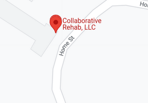
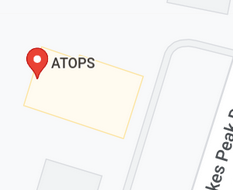
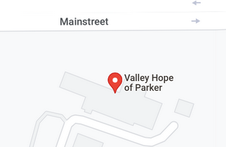

There is already a section to the side showing how you can get help. However, to be more specific I wanted to include a page with all of the rehab centers In Parker and Castle Rock, CO.
The first one is: Collaborative Rehab, LLC.

Address:4001 Home St #101, Castle Rock, CO 80108
The second one is: ATOPS

Address:4001 Home St #101, Castle Rock, CO 80108
The third one is: Valley Hope of Parker

Address:22422 Mainstreet, Parker, CO 80138
These are all of the ones I could find in our general area. There are far more in Denver, CO. However these are examples of places you might go to for rehabilitation.
The articles above give more information and cited sources.